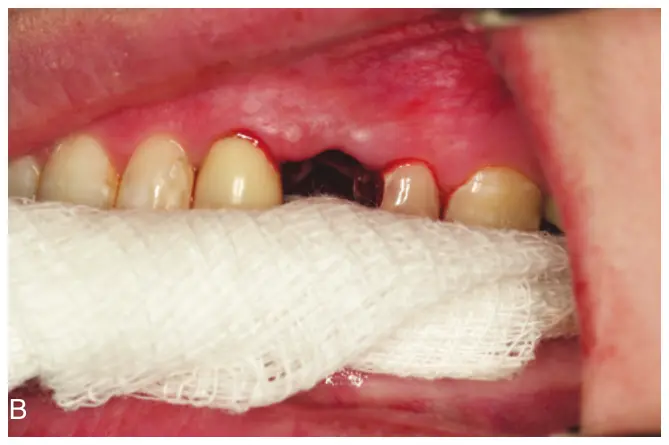

نسخه استخراجشده؛ ترجمه یا تأیید علمی انجام نشده است. وضعیت: captured
پیش از هر چیز: بسیاری از بیماران بیش از خودِ عمل، نگران پیامدهای پس از آناند — درد، تورم، عوارض. و این نگرانی وقتی بیشتر است که به جراح و بیهوشی اعتماد دارند. پس دستورات پس از عمل باید هم شفاهی و هم مکتوب، با زبان سادهی غیرتخصصی، و به بیمار و همراهش داده شود — بهعلاوهی شمارهای که در اورژانس بتوانند جراح یا پزشک آنکال را بگیرند.

اولین مانور کنترل خونریزی: گاز تاشده مستقیم روی ساکت. پکهای بزرگی که سطح اکلوزال دندانهای مجاور را میپوشانند هیچ فشاری به ساکت خونریزیدهنده وارد نمیکنند و بیاثرند. گاز مرطوب شود تا خونِ نشتی درون گاز لخته نبندد و هنگام برداشتن گاز، لخته را با خود نکَنَد.
دستور به بیمار: دستکم ۳۰ دقیقه محکم روی گاز فشار بده، گاز را نجو، و در تمام این مدت دهان را باز نکن.
چه چیزی طبیعی است: نشت خفیف از محل کشیدنِ تازه تا ۲۴ ساعت طبیعی است. و به بیمار هشدار بده که مقدار کمی خون مخلوط با مقدار زیادی بزاق میتواند خیلی زیاد به نظر برسد.
اگر بیش از نشت خفیف بود: گاز تاشدهی جدید مستقیم روی محل، و این بار تا یک ساعت نگه دارد. اگر باز هم لازم شد، کیسهی چای داخل ساکت و ۳۰ دقیقه گاز گرفتن روی آن — تانیک اسید چای معمولی وازوکنستریکتور موضعی است.
چه زمانی بیمار باید برگردد: نشت طولانیمدت، خونریزی قرمز روشن، یا لختههای بزرگ در دهان. آنوقت جراح ناحیه را از نزدیک معاینه میکند، اقدامات مناسب را انجام میدهد، و به کمک گرفتن از یک متخصص جراحی هم فکر میکند.
راهحل برای بیماری که از خون در دهانش بدش میآید: بهجای تف کردن، محکم روی گاز بگیرد و بزاقش را قورت بدهد.
و یک هشدار که تلفن نیمهشب را حذف میکند: به بیمار بگو ممکن است در خواب کمی نشت داشته باشد و بزاقش رنگی شود، و احتمالاً صبح لکههای خون روی بالشش ببیند. گفتن همین یک جمله، بسیاری از تماسهای مضطربانهی نیمهشب را از بین میبرد. در عین حال به بیمار بگو اگر نگران خونریزی است حتماً تماس بگیرد.